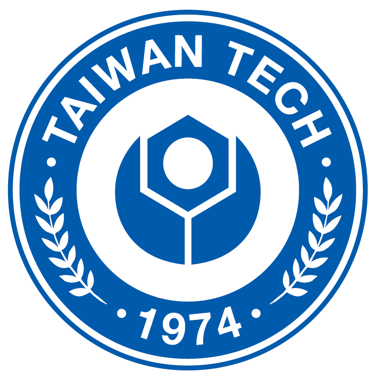

Systems software & research系統軟體與研究
Louis Wu
Louis 吳定栩
Electrical Engineering · Double Major in Computer Science · Biomedical Engineering Minor
主修電機 · 雙主修資工 · 輔系醫工

National Taiwan University of Science and Technology
國立臺灣科技大學 (NTUST)
I build systems close to the hardware: UEFI analysis tools, reproducible performance experiments, an AVR real-time kernel, and cross-platform AI benchmarking. My research also covers radiomics transfer learning and clinical information retrieval.
我專注於貼近硬體的系統開發，包括 UEFI 分析工具、可重現的效能實驗、AVR 即時核心與跨平台 AI benchmark；研究亦涵蓋放射組學遷移學習與臨床資訊檢索。
02
About Me
自我簡介
I study Electrical Engineering at National Taiwan University of Science and Technology (Taiwan Tech), with a double major in Computer Science and Information Engineering and a minor in Biomedical Engineering. I am most interested in computer systems, performance engineering, systems software, firmware, computer architecture, and machine learning systems.
我主修國立臺灣科技大學電機工程，並雙主修資訊工程、輔系醫學工程。主要興趣是電腦系統、效能工程、系統軟體、韌體、電腦架構與機器學習系統。
Education
學歷
Taiwan Tech · EE + CSIE · BE Minor
台科大 · 電機 + 資工 · 輔系醫工
GPA 3.77/4.30 · Expected Dec. 2026
GPA 3.77/4.30 · 預計 2026 年 12 月畢業
Industry & Research
產業與研究
Lenovo · AMD · Feng Chia University
Lenovo · AMD · 逢甲大學
Firmware, systems performance & radiomics
韌體、系統效能與放射組學
Research
研究
Systems · Firmware · ML Systems
系統 · 韌體 · 機器學習系統
Performance, architecture and reproducibility
效能、架構與可重現性
04
Work Experience
工作經驗
-
Server UEFI Firmware Intern
伺服器 UEFI 韌體實習生
Jul 2026 – Sep 2026
Lenovo
Lenovo（聯想）
- Built an AI-assisted UEFI trace-analysis system that parses logs exceeding 300,000 lines in about 10–20 seconds and finds relevant source locations within seconds.建立 AI 輔助 UEFI trace 分析系統，可在約 10–20 秒解析超過 30 萬行的 log，並在數秒內找到相關原始碼位置。
- Linked trace messages to firmware modules, source locations, Jira issues, and commits; split context by module so the built-in AI model could identify likely root causes more accurately.將 trace 訊息連結至韌體模組、原始碼位置、Jira issue 與 commit，並依模組拆分 context，讓內建 AI 模型更準確定位可能的 root cause。
- Co-invented a tokenized serial-logging method that reduced repetitive UEFI output and measured logging latency by about 70%; submitted it for internal patent review.共同發明 tokenized serial logging 方法，使重複 UEFI 輸出與量測 logging latency 降低約 70%，並送交公司內部專利審查。
-
Research Consultant
研究顧問
Apr 2026 – Sep 2026
WorldQuant · Remote
WorldQuant · 遠端
- Researched factor-based alpha signals and systematic trading strategies on the WorldQuant platform.在 WorldQuant 平台研究因子式 alpha 訊號與系統化交易策略。
- Earned IQC Gold certification, received an invitation to serve as a Research Consultant, and reached approximately No. 360 in Taiwan on the platform.取得 IQC Gold 認證並獲邀擔任 Research Consultant；平台臺灣排名約第 360 名。
-
Research Assistant (AutoML Pipeline)
研究助理（AutoML Pipeline）
Feb 2026 – Now
Feng Chia University · Remote
逢甲大學 · 遠端
- Developed a cross-dataset radiomics transfer framework for an NSTC-funded project by mapping heterogeneous feature names into a shared attribute space and selecting compatible source datasets.參與國科會計畫，將異質放射組學特徵名稱映射到共同屬性空間，並選擇相容的來源資料集，建立跨資料集遷移框架。
- Led modeling and evaluation, including cross-anatomy and cross-attribute transfer learning, nested stratified cross-validation, and leakage-safe imbalance handling.負責模型與評估，包括跨部位、跨屬性遷移學習、nested stratified cross-validation，以及避免資料洩漏的不平衡處理。
-
Server System Performance Optimization Intern
伺服器系統效能優化實習生
Jul 2025 – Dec 2025
AMD (Advanced Micro Devices, Inc.) · Taipei, Taiwan
AMD (超微半導體股份有限公司) · 台北，臺灣
- Ran and analyzed SPEC CPU, SPEC Java, STREAM, fio, and iPerf benchmarks to isolate CPU, memory, storage, and network bottlenecks.執行並分析 SPEC CPU、SPEC Java、STREAM、fio 與 iPerf，定位 CPU、記憶體、儲存與網路瓶頸。
- Automated environment setup, batch runs, and data collection with shell scripts while changing one system variable per experiment.以 shell script 自動化環境設定、批次執行與資料收集，並在每次實驗中只調整一項系統變數。
- Built an internal service that matched equivalent fields across benchmark spreadsheets and generated A/B charts and customer reports.建立內部分析服務，對齊不同 benchmark 試算表中的等價欄位，並產生 A/B 圖表與客戶報告。
05
Research & Projects
研究與專案
Featured Research
主要研究
2026
Systems · Benchmarking
系統 · 效能評測
PerfRunbench
Electrical Engineering · Taiwan Tech
電機工程系 · 台科大
A cross-platform framework for resource-guarded AI workloads, reversible runtime tuning, and reproducible HTML/JSON experiment reports.
跨平台 AI 效能評測框架，支援資源限制、可回復的 runtime 調校，以及可重現的 HTML/JSON 實驗報告。
Python
Benchmarking
Linux / WSL
ArmTune
View details
查看詳細
2024
Research
研究
MoE-DUGAN: Generative Denoising for LDCT
MoE-DUGAN：低劑量CT生成式去雜訊
Lab of AI & Computer Vision · NTUST
AI 與電腦視覺實驗室 · NTUST
Extended the dual-discriminator DUGAN architecture with expert routing and adaptive adversarial-loss weighting for low-dose CT denoising.
延伸 dual-discriminator DUGAN 架構，加入 expert routing 與可調式對抗 loss 權重，用於低劑量 CT 去雜訊。
PyTorch
GAN
DDPM
MoE
View details
查看詳細
2023
Research
研究
LLM-Guided Clinical Retrieval (RAG)
LLM 導引臨床檢索（RAG）
Lab of Medical Imaging · NTUST
醫學影像實驗室 · NTUST
Hybrid retrieval system for clinical narratives — chunked BioBERT retriever with sparse cross-chunk aggregation and LLM-based re-ranking.
混合式臨床敘述檢索系統：分段 BioBERT 檢索器、稀疏跨片段聚合與 LLM 等價判定重排序。
PyTorch
RAG
LoRA
NLP
View details
查看詳細
2023
ML · Bio-signal
機器學習 · 生醫訊號
Surface EMG Hand-State Classification
表面肌電手部狀態分類
Undergraduate Research Proof of Concept · Taiwan Tech
大學部研究概念驗證 · 台科大
Built a complete surface-EMG acquisition pipeline and trained time-series classifiers, including an LSTM model, to distinguish fist clenching from release.
完成表面肌電訊號採集流程，並訓練包含 LSTM 的時序分類模型，辨識握拳與放開狀態。
Surface EMG
LSTM
Time Series
View details
查看詳細
Sep 2026 – Present
Systems · Embedded
系統 · 嵌入式
ATmega OS
ATmega OS
Independent Project
個人專案
A stackful preemptive AVR kernel with priority scheduling, synchronization primitives, an interactive UART shell, and a compact runtime for uploaded RV32I guests.
具 stackful preemptive scheduling、同步原語、互動式 UART shell，以及可載入 RV32I guest runtime 的 AVR 核心。
AVR C / Assembly
Preemptive RTOS
RV32I
View details
查看詳細
Other Projects
其他專案
2024
Brain-Computer Interface Group
腦機介面研究小組
EEG Reading Group and Literature Sharing.
EEG 讀書會與文獻分享。
2023
SolidWorks Educational Videos
SolidWorks 教學影片
Stress simulation & topology optimization for NTU Racing Team.
教授應力模擬與拓撲優化給 NTU 賽車隊結構組員。
2022
AI-Powered Blind Cane
智慧導盲杖
Raspberry Pi + image recognition.
Raspberry Pi 為核心搭載影像辨識。
2022
IoT Refrigerator
IoT 冰箱
Remote monitoring & thermoelectric cooling.
遠端監控與熱電致冷功能。
2022
Remote-Controlled Airplane
遙控飛機
Built using Arduino and SolidWorks.
使用 Arduino 與 SolidWorks 製作。
2024
Electric Bicycle
電動自行車
Designed and built independently.
自行設計與製作。
2019
MediaTek Funded Science Fair
聯發科補助科展專案
Participated with full funding from MediaTek.
獲聯發科全額補助參與科學展覽。
06
Awards & Achievements
獲獎與競賽經歷
Programming Competitions
程式競賽
-
Top 5
第五名
Coding 101Coding 101
Collaborative software creation competition focused on programming literacy and practical implementation.以程式素養、協作開發與實作能力為核心的程式競賽。
Click for competition context點擊看比賽說明
-
Third Place
第三名
Taipei Metro Hackathon (AI & UI/UX)台北捷運黑客松（AI & UI/UX）
2025 · Led a cross-functional team and delivered a working AI MVP before the deadline.2025 · 帶領跨職能團隊，在截止前完成可運作的 AI MVP。
Click for competition context點擊看比賽說明
Hackathon Competitions
黑客松競賽
-
Champion
冠軍
Sustainability Hackathon永續智慧創新黑客松
SDG-oriented challenge with enterprise problem statements and student-built solutions.以 SDGs 為主軸，透過企業命題與學生解題進行永續創新提案。
Click for competition context點擊看比賽說明
-
Merit Award
佳作
Vocational Cup Hackathon · 2023 Northern Preliminary技職盃黑客松 · 2023 北區初賽
Merit Award.佳作。
Click for competition context點擊看比賽說明
-
Champion
冠軍
Vocational Cup Hackathon · 2024 Northern Regional技職盃黑客松 · 2024 北區賽
Champion of the northern regional round.北區賽冠軍。
Click for competition context點擊看比賽說明
-
Best Value Creation
最佳創造價值
Vocational Cup Hackathon · 2024 National Final技職盃黑客松 · 2024 全國決賽
Best Value Creation Award · 2nd overall.最佳創造價值獎 · 總排名第二。
Click for competition context點擊看比賽說明
-
Champion
冠軍
Vocational Cup Hackathon · 2025 Northern Regional技職盃黑客松 · 2025 北區賽
Champion of the northern regional round.北區賽冠軍。
Click for competition context點擊看比賽說明
-
National Merit
決賽佳作
Vocational Cup Hackathon · 2025 National Final技職盃黑客松 · 2025 全國決賽
National Final Merit Award.全國決賽佳作。
Click for competition context點擊看比賽說明
-
Selected
入選
MakeNTU / NTU EE MakerthonMakeNTU / 台大電機創客松
Hardware-software integration maker competition with rapid prototyping under time pressure.強調軟硬整合、快速原型與現場實作的創客松競賽。
Click for competition context點擊看比賽說明
Robotics Competitions
機器人競賽
-
Champion
冠軍
Humanoid Challenge, TIRT 2019台灣國際機器人大賽 TIRT 人形機器人挑戰賽 2019
Click for competition context點擊看比賽說明
-
Top 5
前五名
Taiwan Finals, World Robot Olympiad (WRO) 2017WRO 世界機器人大賽台灣決賽 2017
Click for competition context點擊看比賽說明
-
Top 32
三十二強
ROBO-ONE Japan 2020日本 ROBO-ONE 2020
Click for competition context點擊看比賽說明
07
Activities & Leadership
組織、領導與志工經驗
Student Organizations
學生組織與社團
- Member, Taiwan Tech Robotics Research Club台科大機器人研究社社員
- Structural Team Member, NTU Racing Team (2023) — SolidWorks design, topology optimization, stress analysis, Ansys, and COMSOL台大賽車隊結構組 (2023) — SolidWorks 設計、拓樸最佳化、應力分析、Ansys 與 COMSOL
Leadership
領導經歷
- Outstanding Youth Award, Taiwan Tech台科大傑出青年 (2025 · 1 of 11 university-wide recipients)（2025 · 全校 11 名獲獎者之一）
- Vice President, ECE Student Association (2023–2024)電資學會副會長 (2023–2024)
- General Coordinator, Banner Church newcomer event (2024 · 100+ participants); Small-Group Leader (2023)台北旌旗教會新生歡迎會總召 (2024 · 100+ 人)；小隊長 (2023)
- General Coordinator, Taiwan Tech University Welcome Event (2023 · 30+ participants)台科大大學歡迎會總召 (2023 · 30+ 人)
- Led 8 of 11 competition teams領導過 11 個競賽團隊中的 8 隊
Volunteer
志工經驗
- Volunteer Organizer, Cinsbu (Zhenxibao) Atayal Children's Camp (2024, 2025), with the NYCU Campus Fellowship陽明交大校園團契鎮西堡泰雅兒童營協辦志工 (2024、2025)
- Children's Group Counselor for Summer Camp, Stream of Praise暑期兒童營輔導，Stream of Praise
- Organized community free appliance repair sessions舉辦多場社區免費家電維修服務
- Blood Donation Services Volunteer捐血服務志工
Teaching & Outreach
教學與分享
- Invited speaker, Taiwan Tech ECE incoming-student and parent orientations (2025, 2026)台科大電子系新生與家長說明會受邀講者 (2025、2026)
- Northern-region student representative for a national English-Medium Instruction program (2026)全國 EMI 計畫北區學生代表 (2026)
- Speaker on engineering English and learning strategies at Taiwan Tech and National Taiwan University of Arts (2025, 2026)於台科大與臺灣藝術大學分享工程英語與學習策略 (2025、2026)
08
Skills & Interests
技能與興趣
Programming
程式語言
PythonC++CDartSQLAssembly.NET (C#)
AI / ML
AI / 機器學習
PyTorchTransformersRAGGANsCVNLPOptuna
Systems & Cloud
系統與雲端
LinuxWindows/WSLUEFIDockersystemdAWS/GCPGitEDK IIAVR
Hardware & Design
硬體與設計
SolidWorksAnsysCOMSOLCadence VirtuosoArduinoRaspberry PiFPGA
Languages
語言
- English — TOEFL iBT 5.0 (100/120 equivalent)英文：托福 iBT 5.0（換算 100/120）
- Chinese — Native中文：母語
Interests
興趣
Extreme sports極限運動
Basketball籃球
Coding程式設計
DIY electronics電子 DIY
Travel旅行
09
Relevant Coursework
相關課程
Show all courses
展開全部課程
Mathematics & Foundations
數學與基礎課程
- Calculus (I) & (II)微積分 (一) & (二)
- Linear Algebra線性代數
- Physics (I) & (II)物理 (一) & (二)
- Differential Equations微分方程
- Probability機率
- Discrete Mathematics離散數學
- Introduction to Computers and Computing計算機概論
- Introduction to EECS & Engineering Ethics電資概論與工程倫理
Electrical Engineering
電機工程
- Signals and Systems信號與系統
- Signal and System Lab信號與系統實習
- Circuit Theory (I) & (II)電路學 (一) & (二)
- Electronics電子學
- Electronic Circuits電子電路
- Electronics Laboratory電子學實習
- Electronics Lab.電子電路實習
- Electromagnetics電磁學
- Electric Machinery電機機械
- Electric Machinery Lab.電機機械實習
- Analog and Mixed Signal Integrated Circuits and Systems類比及混合訊號積體電路與系統
Computer Science & Systems
資訊工程與系統
- Computer Programming and Applications計算機程式與應用
- Practices of Computer Programming and Applications計算機程式與應用實習
- Data Structures資料結構
- Object-oriented Programming物件導向程式設計
- Lab for Object Oriented Programming物件導向程式設計實習
- Computer Organization計算機組織
- Operating Systems作業系統
- Introduction to Computer Networks計算機網路概論
- Algorithms演算法
- Database Systems資料庫系統
- Introduction to Data Science資料科學導論
- .NET Programming.NET 程式設計
Hardware, IC & Project Labs
硬體、晶片與專題實作
- Digital Logic Design數位邏輯設計
- Digital System Design數位系統設計
- Introduction to Microcomputer微算機概論
- Microcomputer Lab.微算機概論實習
- Microcomputer Applications微算機應用
- Introduction to VLSI Designs超大型積體電路設計導論
- Practice Sessions for VLSI Circuit Design超大型積體電路設計實習
- Software Development for Electronic Design Automation電子設計自動化軟體開發與實作
- Electrical Engineering Special Projects (I)電機實務專題 (上)
- Electrical Engineering Special Projects (II)電機實務專題 (下)
- Special Projects in CSIE (I)資工實務專題 (上)
- Special Projects in CSIE (II)資工實務專題 (下)